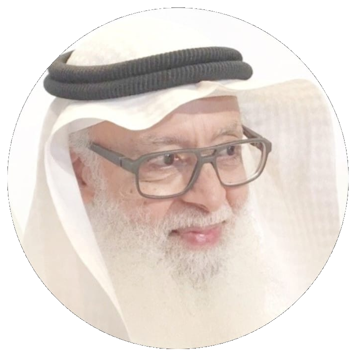
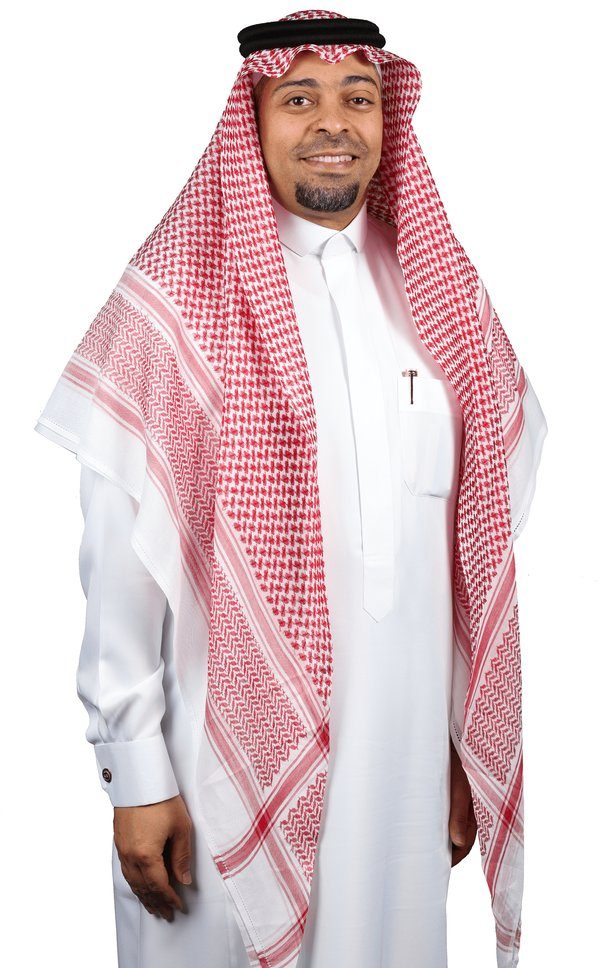
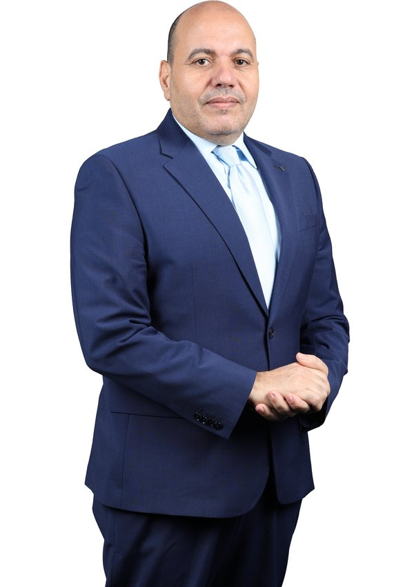
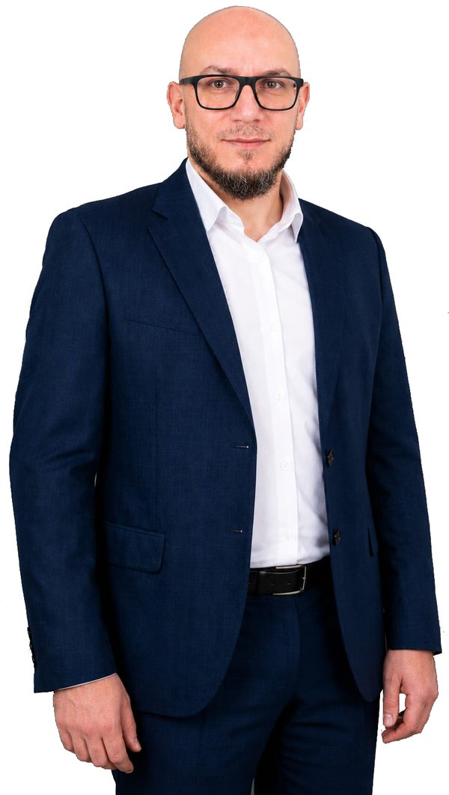
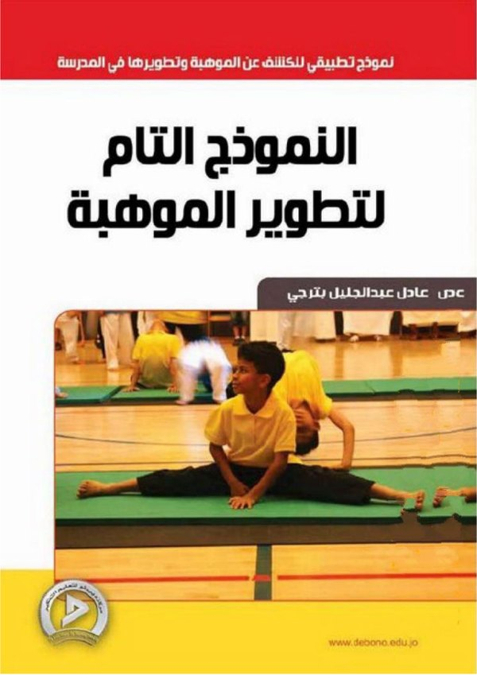

مدارس دار الذكرTalent Platform
مدارس دار الذكرTalent Platform
المنصة الرسمية لتطبيق «النموذج التام لتطوير الموهبة» الذي صمّمه د. عادل عبدالجليل بترجي في مدارس دار الذكر: كشفٌ شامل بمعايير متعددة، وتسعة مكوّنات تحقق عنصري التمييز والتسريع، وسجلٌّ تام يتابع تطور موهبة كل طالب.
يهدف النموذج إلى تلبية احتياجات تطوير الموهبة لجميع الفئات الطلابية التي تتكون منها البيئة المدرسية على اختلاف أعمارها ومستوياتها الأكاديمية وقدراتها العقلية، من خلال برامج ومناشط تحقق عنصري التمييز والتسريع في بيئة تعليمية ملائمة.
يقدّم النموذج مفهوماً للموهبة يتمثل في كونها مزيجاً متجانساً من القدرة العقلية العالية، والتميّز في مجال أو أكثر من مجالات العلوم أو الفنون أو المعرفة، والسمات الشخصية المتمثلة في الدافعية الشخصية والابتكار، والأساليب المتعددة التي تُستقى من خلالها المعلومات وتُطرح في توظيف هادف لخدمة الإنسان والمجتمع، مع الاستعداد الوجداني لتحمّل تبعات التفرد.— النموذج التام لتطوير الموهبة، د. عادل عبدالجليل بترجي
تعمل منظومة الموهبة في مدارس دار الذكر بدعم مباشر من قيادة المدارس، من التأسيس إلى التنفيذ.

د. عادل عبد الجليل بترجيالمؤسس
أ. بسام غرابالمدير التنفيذي
د. مصطفى خلفمدير قطاع التعليم
أ. مصطفى حسينالمنسق التنفيذيلا يعتمد على معيار واحد، بل يستخدم عدة معايير في آنٍ واحد: التحصيل الأكاديمي، والقدرات المتعددة، والقدرات العقلية، والقدرات الابتكارية، والسمات السلوكية.
يتكون النموذج من تسعة أجزاء رئيسة تحقق في مجموعها التنويع والتمييز، وتلبّي الاحتياجات العقلية المختلفة لجميع الطلاب من خلال البرامج والمناشط المتعددة.
لا يشتمل النموذج على برامج وأنشطة محددة، بل على أُطر يمكن من خلالها تصميم البرامج التي تلائم الأهداف المرحلية والفروق العمرية والقدرات العقلية المتفاوتة للطلاب.

يقدّم الكتاب دراسة علمية هدفت إلى تصميم نموذج متكامل يُعنى بالموهوبين في مدارس دار الذكر، يربط بين الأهداف التعليمية لجميع الطلاب، ويتوافق مع البيئة التعليمية والتربوية والاجتماعية والديموغرافية للمدارس. استخدم فيه المؤلف منهجاً متعدداً يجمع المنهج الوصفي والتجريبي ودراسة الحالة، مع حصر شامل لطلاب المراحل الابتدائية والمتوسطة والثانوية.
انطلق المؤلف من نموذج الإثراء الثلاثي عبر المدرسة لرنزولي، وأجرى تعديلات على مكوناته بما يلائم البيئة المحلية، ليخرج بنموذج جديد أسماه «النموذج التام لتطوير الموهبة»؛ يتسع فيه مفهوم الموهبة من «تقاطع» السمات إلى «مزيج متجانس» منها، وتتوسع برامجه لتشمل الإثراء، والرعاية الخاصة، والتسريع الأكاديمي، والإرشاد النفسي، وتثقيف أولياء الأمور، وتدريب المعلمين.
يتكون النموذج التام لتطوير الموهبة من تسعة أجزاء رئيسة تحقق في مجموعها التنويع والتمييز، لتلبية الاحتياجات العقلية المختلفة لجميع الطلاب.
الأسماء والتعريفات كما وردت في كتاب «النموذج التام لتطوير الموهبة».
يوزّع النموذج الطلاب على ثلاثة مستويات للموهبة، ويقدّم لكل مستوى برامجه، دون أن يُحرم أحد من الإثراء.
يُعرَّض جميع الطلاب لبرامج الإثراء العام، ويتدربون على المهارات، ويشاركون في الأنشطة الموجهة حسب اهتماماتهم.
الطلاب الذين تحققت فيهم معايير وعاء الموهبة، ويمثلون ما بين 15% و20% من الطلاب، تُقدَّم لهم برامج تدريب متقدمة وإثراء متخصص ورعاية خاصة.
طلاب أبدوا رغبة واهتماماً بمواضيع أو قضايا معينة، وأظهروا استعداداً للعمل الجاد في متابعتها على مستوى علمي متقدم، ويمثلون 2% – 3% من عموم الطلاب.
معايير متعددة: التحصيل، والقدرات المتعددة، والقدرات العقلية والابتكارية، والسمات السلوكية
معلومات الوضع الراهن، وخطة التطوير، ومعلومات التطور
الإثراء العام للجميع، والتمييز والتسريع للوعاء الإثرائي، والمشاريع الهادفة للمبدعين
تقييم أداء المشاركين ومستويات المخرجات، وتطوير الموهبة الكامنة بتقييم إمكاناتها دورياً
المسابقات العلمية والأكاديمية التي يشارك فيها طلابنا، مع حالة التسجيل وأقرب موعد لكل مسابقة وعدّاد تنازلي للوقت المتبقي.
المواعيد مأخوذة من المصادر الرسمية للمسابقات، ومن جدول بيانات المنصة عند تحديثه، وكلها بتوقيت الرياض.
كل المسابقات والتقويم الكامل